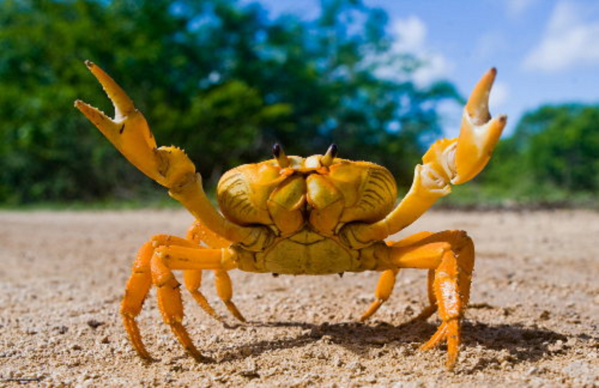

Os Crustáceos
Os crustáceos são os grupos dos caranguejos, lagostas, camarões e tatuzinhos de jardim.Geralmente possuem dez patas e quatro antenas. Em sua maioria são aquáticos, de água doce ou salgada. Se alimentam de plânctons e pequenos animais.
Os crustáceos tem desenvolvimento indireto e são ovíparos. Eles respiram através de brânquias.Possuem valor econômico na alimentação e valor ecológico pois alguns são a base da cadeia alimentar.
Do grego arthros significa articulação e podos são pés; o filo e facilmente identificado devido seu número de seres abundante no planeta. Por uma estrutura de membros comandados por nervos, esses seres tornam-se mais desenvolvidos de que outros filos.
Apesar dessa característica marcante, possui outros fatores para classificação desses seres. São todos invertebrados. Porém eles possuem uma espécie de esqueleto, que ao contrário dos vertebrados, que têm um sistema de sustentação interna, os artrópodes possuem um externo chamado de exoesqueleto.
São animais celomados e de corpo segmentado. São dioicos pois possuem apenas um sexo definitivo.
Todos se reproduzem sexuadamente, mas seu desenvolvimento pode ser direto ou indireto a qual possui fase larval. No seu desenvolvimento embrionário o blastóporo origina primeiro a boca sendo assim protostômios.
Os artrópodes são separados em cinco classes dependendo seu número de pernas, são elas insetos, aracnídeos, crustáceos, diplópodes e quilópodes.
No reino animália, o filo arthropoda é o maior em questão de números de animais representantes. Dentro da cadeia evolutiva, esse filo desenvolveu uma estrutura diferenciada para locomoção, o desenvolvimento de membros articulados capazes de dar mais velocidade de locomoção em ambiente terrestre.